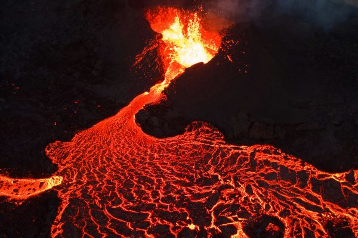
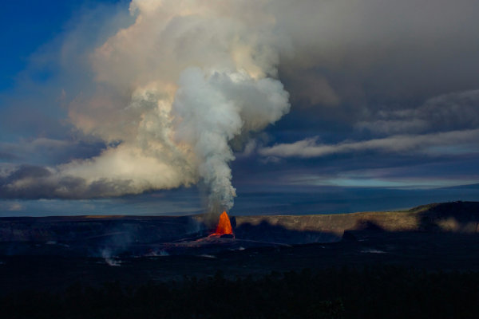
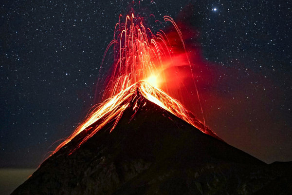

Descubre Islandia
Un país de contrastes asombrosos, donde el fuego de los volcanes se encuentra con el hielo de los glaciares.
Vídeo de introducción a los paisajes de Islandia. Atributos:
autoplay, muted, loop y
controls.
El Fuego de los Volcanes
Islandia es un testimonio viviente de la furia geológica de la Tierra. Ubicada sobre la Dorsal Mesoatlántica, esta isla es una de las regiones volcánicas más activas del planeta. Los volcanes no solo son una característica dominante del paisaje, sino que también son una fuente de energía geotérmica que calienta hogares y genera electricidad.
Desde las erupciones explosivas que transforman el cielo con ceniza y fuego, hasta los flujos de lava lentos que esculpen nuevas tierras, cada volcán islandés cuenta una historia milenaria de creación y destrucción. Ejemplos como el Eyjafjallajökull o el Bárðarbunga han capturado la atención mundial, mostrando la capacidad de la naturaleza para imponerse.



Galería
Un recorrido visual por la asombrosa diversidad de Islandia. Desde las vibrantes auroras boreales hasta la majestuosidad de sus volcanes y glaciares, cada imagen captura un fragmento de la belleza indómita de esta isla única.